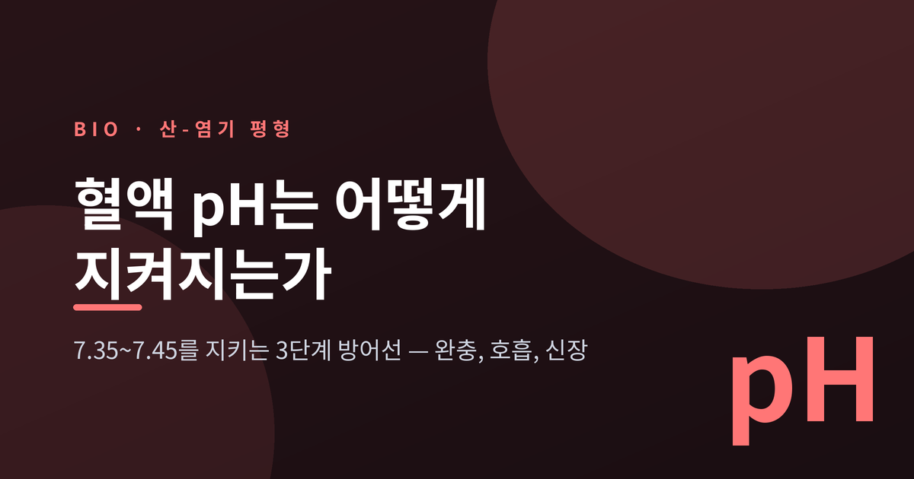
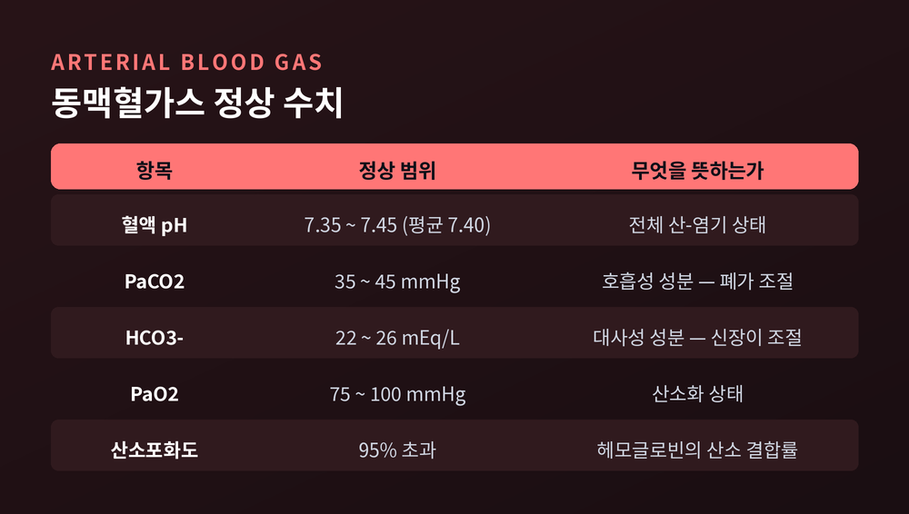
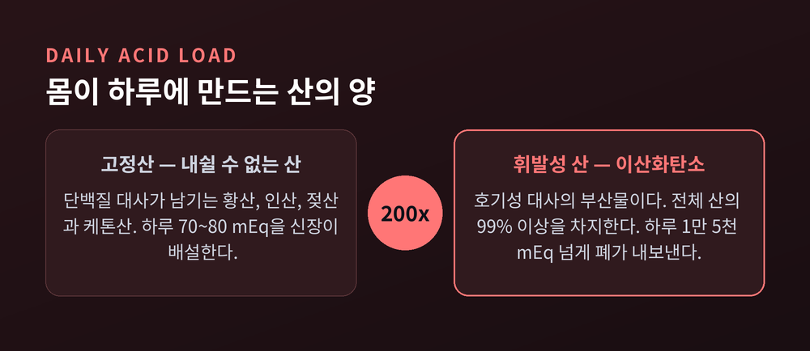
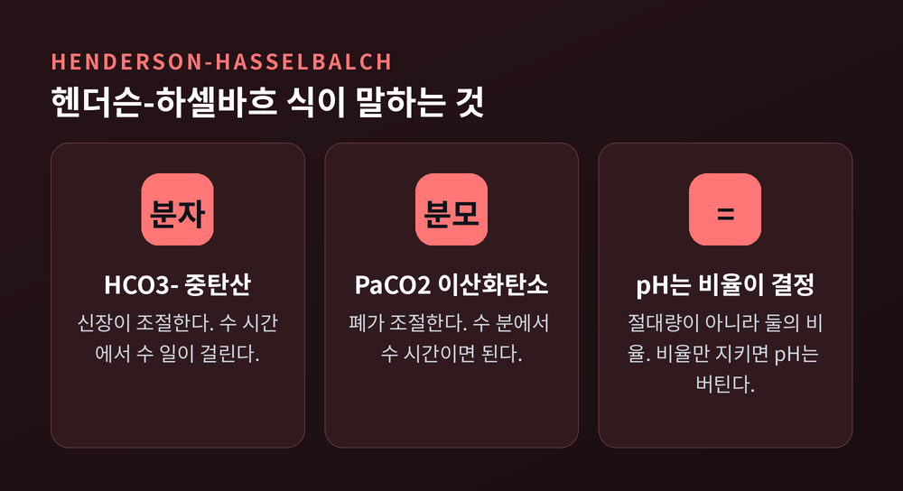
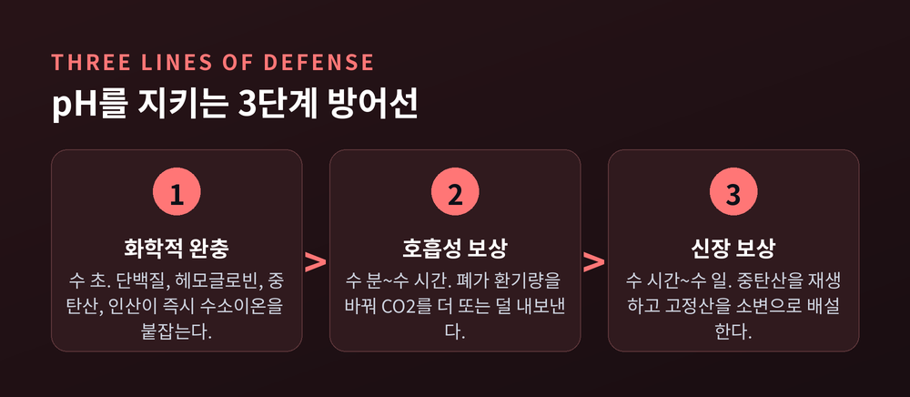
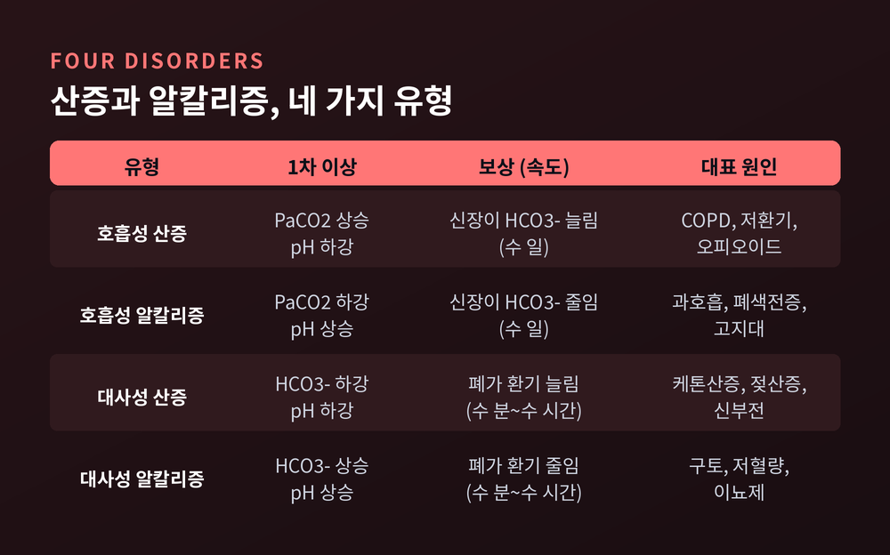
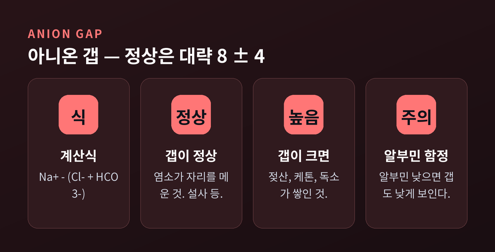

혈액 pH 7.35~7.45, 몸은 어떻게 이 좁은 범위를 지켜내는가

이번 글에서는 산-염기 평형의 생리학을 정리해 보겠습니다. 우리 몸이 혈액 pH를 어떻게 7.35에서 7.45 사이에 붙들어 두는지, 그 구조를 따라가 봅니다.
먼저 답부터 세 줄로 적겠습니다.
첫째, 몸은 화학적 완충 → 호흡성 보상 → 신장 보상이라는 3단계 방어선을 씁니다.
둘째, 이 모든 것의 중심에는 탄산-중탄산 완충계가 있고, 그 작동 원리는 헨더슨-하셀바흐 식 한 줄로 압축됩니다.
셋째, pH가 무너지는 방식은 네 가지뿐이며, 그 원인을 좁히는 도구가 아니온 갭입니다.
왜 하필 7.35~7.45인가
병적인 상태가 없다면 인체의 pH는 7.35에서 7.45 사이에 머뭅니다. 평균은 7.40입니다.
7.35보다 낮으면 산혈증, 7.45보다 높으면 알칼리혈증이라고 부릅니다.
여기서 한 가지 의문이 생깁니다. 왜 중성인 7.0이 아니라 약간 알칼리 쪽인 7.40일까요.
이유는 이 수준의 pH가 여러 생물학적 과정에 최적이기 때문입니다. 그중 가장 중요한 것이 혈액의 산소화입니다. 또 체내 생화학 반응의 중간 산물 상당수가 중성 pH에서 이온화되어 버려, 그 상태로는 쓰기가 어려워집니다.
pH가 범위를 벗어나면 세 가지가 동시에 흔들립니다.
하나, 조직으로 가는 산소 전달입니다. 산소해리곡선이 이동합니다. 알칼리 쪽으로 기울면 곡선이 왼쪽으로 밀려 헤모글로빈이 산소를 더 꽉 붙잡고, 산성 쪽으로 기울면 오른쪽으로 밀려 산소 친화력이 떨어집니다.
둘, 단백질 구조입니다. 단백질의 제 모양을 유지시키는 것은 표면의 전하입니다. pH가 생리적 범위를 벗어나면 그 전하가 바뀌고, 단백질은 변성되어 기능을 잃습니다.
셋, 수많은 생화학 반응의 평형입니다. pH 자체가 그 평형의 전제 조건입니다.
참고로 사람이 버틸 수 있는 세포외액 pH는 대략 6.8에서 7.8까지로 봅니다. 그 넓은 구간 안에서 몸은 굳이 0.1 폭의 방을 고집합니다. 그만큼 대가가 큰 일이기 때문입니다.

가만히 있어도 하루에 산 1만 5천 밀리당량
몸은 스스로 산을 만들어냅니다. 그것도 엄청난 양을 만듭니다.
산은 두 종류로 나뉩니다. 내쉴 수 있는 산과 내쉴 수 없는 산입니다.
내쉴 수 있는 산(휘발성 산)은 이산화탄소입니다. 호기성 대사 과정에서 나오는 CO2가 하루 산 생산의 99% 이상을 차지합니다. 그 양이 하루 1만 5천에서 2만 5천 밀리당량(mEq)에 이릅니다.
내쉴 수 없는 산(고정산)은 주로 단백질 대사에서 나옵니다. 황산, 인산, 젖산, 케톤산 같은 것들입니다. 하루 70에서 80 밀리당량쯤 만들어집니다.
두 숫자의 차이가 이 글의 절반을 설명합니다. CO2 쪽 부담이 고정산의 200배를 훌쩍 넘습니다. 그래서 산-염기 조절의 1차 축은 콩팥이 아니라 폐입니다.
고정산은 내쉴 수 없으니 신장이 소변으로 내보내야 합니다. 양은 적지만 처리 방법이 까다롭습니다.

1단계 방어선 — 화학적 완충, 수 초 안에
가장 먼저 움직이는 것은 혈액 속 완충제입니다. 몇 초면 충분합니다.
몸은 네 가지 완충계를 씁니다. 중탄산 완충계, 헤모글로빈 완충계, 단백질 완충계, 그리고 인산을 비롯한 적정산 완충계입니다.
의외의 사실이 하나 있습니다. 수치상 가장 많은 일을 하는 것은 단백질입니다. 단백질이 총 완충 능력의 60~70%를 담당합니다. 혈액 완충력의 3분의 2, 그리고 세포 안 완충의 대부분이 단백질 몫입니다.
단백질이 잘 완충하는 이유는 히스티딘 같은 작용기의 pKa가 세포내 pH에 가깝기 때문입니다. 수소이온을 붙였다 뗐다 하기 좋은 조건입니다.
혈장에서는 알부민이 대표 선수입니다. pH 7.4에서 알부민 한 분자는 음전하 15개를 띠고 수소이온을 붙잡습니다.
적혈구 안에서는 헤모글로빈이 그 일을 합니다. 헤모글로빈은 적혈구 질량의 3분의 1을 차지하는 주 단백질이고, CO2에서 유래한 산을 처리하는 가장 효과적인 완충제입니다.
그런데도 임상에서 산-염기 상태를 볼 때 우리는 헤모글로빈이 아니라 중탄산을 봅니다. 이유가 따로 있습니다.
중탄산 완충계 — 약한데 가장 중요한 역설
핵심 반응식은 다음 한 줄입니다.
CO2 + H2O ⇌ H2CO3 ⇌ H+ + HCO3-
이산화탄소가 물과 만나 탄산이 되고, 탄산은 중탄산이온과 수소이온으로 갈라집니다. 효소 없이도 일어나지만, 탄산탈수효소가 이 반응을 크게 가속합니다. 이 효소는 적혈구, 신세뇨관, 위점막, 췌장세포에 자리 잡고 있습니다.
정상 pH에서 중탄산과 탄산은 20 대 1로 존재합니다. 중탄산이 20배 많다는 것은, 이 계가 혈액이 산성으로 기우는 변화를 막는 데 특히 유리하다는 뜻입니다. 젖산이든 케톤이든 몸의 대사 노폐물 대부분이 산이니, 이 편향은 합리적인 설계입니다.
여기서 교과서적인 역설이 등장합니다.
중탄산 완충계의 pKa는 6.1입니다. 완충제는 pKa 근처에서 가장 잘 작동합니다. 즉 이 계의 유효 범위는 대략 pH 5.1에서 7.1 사이이고, 정상 혈액 pH인 7.4는 그 범위 바깥에 있습니다.
화학적으로만 보면 이 자리에 어울리지 않는 완충제입니다.
그런데도 가장 중요합니다. 이유는 단 하나입니다. 이 계만이 수소이온을 '내쉴 수 있는 형태'로 바꿔줍니다.
수소이온이 중탄산과 결합해 탄산이 되고, 탄산탈수효소가 이를 물과 CO2로 쪼갭니다. 그 CO2를 폐가 내보냅니다. 혈장 중탄산 농도를 크게 건드리지 않고도 산이 계속 빠져나갑니다.
그래서 이 계는 독립적인 완충제라기보다 CO2를 실어 나르는 수송 장치에 가깝게 기능한다고 표현됩니다.
다른 완충제들이 닫힌 방에서 산을 받아 안고 있는 동안, 중탄산계는 창문을 열어 밖으로 내보냅니다. 용량이 아니라 출구를 가진 것입니다.
헨더슨-하셀바흐 — 이 글에서 딱 하나만 기억한다면
중탄산 완충계를 수학으로 옮긴 것이 헨더슨-하셀바흐 식입니다.
pH = 6.1 + log ( [HCO3-] ÷ (0.03 × PaCO2) )
6.1은 앞서 본 pKa이고, 0.03은 이산화탄소 용해도 계수입니다. 숫자를 외울 필요는 없습니다. 중요한 것은 식의 모양입니다.
pH를 결정하는 것은 중탄산의 절대량도, 이산화탄소의 절대량도 아닙니다. 둘의 비율입니다.
이 한 줄이 보상 생리 전체를 설명합니다.
분자인 HCO3-는 신장이 조절합니다. 분모인 PaCO2는 폐가 조절합니다. 한쪽이 흔들리면 다른 쪽을 같은 방향으로 움직여 비율을 되돌리면 됩니다. 그러면 pH는 지켜집니다.
이것이 보상(compensation)입니다. 원인을 없애는 것이 아니라, 균형을 다시 맞추는 것입니다.

2단계 방어선 — 호흡성 보상, 수 분에서 수 시간
폐는 CO2를 이용해 pH를 조절합니다. 내쉬는 양을 바꾸면 그만입니다.
호흡계가 대사성 pH 교란을 보상할 때, 효과는 수 분에서 수 시간 안에 나타납니다.
얼마나 강력한지 보여주는 숫자가 하나 있습니다. 호흡수를 1분이 채 안 되는 동안 두 배로 올려 여분의 CO2를 제거하면, 혈액 pH가 0.2 올라갑니다. 정상 범위 전체 폭이 0.1인 것을 생각하면 놀라운 크기입니다.
조절은 화학수용체가 맡습니다. 대동맥과 경동맥 벽의 말초 화학수용체가 CO2 변화를 감지해 뇌에 신호를 보냅니다. 연수에 있는 중추 화학수용체는 뇌척수액의 pH 변화에 직접 반응해 호흡을 조절합니다.
대사성 산증이 생기면 연수는 호흡의 속도와 깊이를 함께 올립니다. 심해지면 깊고 빠른 쿠스마울 호흡이 나타납니다. 당뇨병성 케톤산증에서 보이는 그 호흡입니다. 몸이 산을 내쉬려고 애쓰는 모습입니다.
물론 한계가 있습니다.
과호흡으로 낮출 수 있는 pCO2의 하한은 대략 10~12 mmHg입니다. 숨 쉬는 일 자체에도 에너지가 들기 때문입니다. 보상은 수 분 안에 시작되지만 최대치에 이르려면 12~24시간이 필요합니다. 그리고 호흡 노력이 오래 이어지면 호흡근이 지쳐 보상 자체가 무너지고, 산증이 도리어 나빠집니다.
빠르지만 지치는 방어선입니다.
3단계 방어선 — 신장 보상, 수 시간에서 수 일
신장은 느립니다. 대신 근본을 건드립니다.
신장의 대사적 보상은 분이나 시간이 아니라 날 단위로 일어납니다. 급성 호흡성 교란 뒤 수 시간 안에 시작되지만, 완전한 효과가 나타나기까지는 3~5일이 걸립니다.
하는 일은 두 가지입니다. 중탄산을 지키는 일과 고정산을 내보내는 일입니다.
먼저 중탄산입니다. 여기에 반전이 있습니다. 중탄산이온은 사구체에서 자유롭게 여과되지만, 세뇨관 세포는 중탄산이온을 그대로 통과시키지 않습니다. 그래서 몸은 우회로를 씁니다.
- 세뇨관 정단막에서 나트륨을 재흡수하면서 그 대가로 수소이온을 내강으로 내보냅니다.
- 내강에서 그 수소이온이 여과된 중탄산과 만나 탄산이 되고, 탄산탈수효소가 물과 CO2로 쪼갭니다.
- CO2는 막을 자유롭게 통과해 세포 안으로 들어갑니다. 안에서 반응이 거꾸로 돌아 다시 수소이온과 중탄산이 만들어집니다.
- 새로 만들어진 중탄산은 세뇨관주위 모세혈관으로 나가 혈액으로 돌아가고, 수소이온은 다시 내강으로 분비됩니다.
여과된 그 중탄산 분자가 되돌아오는 것이 아닙니다. 분해했다가 다시 재조립하는 것입니다. 교과서가 재흡수 대신 '보존'이라는 단어를 쓰는 이유입니다.
다음은 고정산 배설입니다. 두 가지 형태로 내보냅니다.
하나는 적정산입니다. 분비된 수소이온을 여과된 완충제, 그중 가장 풍부한 인산이 받아 안습니다. 이 경로로 하루 20~40 밀리몰의 수소이온이 나갑니다.
다른 하나는 암모늄입니다. 근위세뇨관이 글루타민을 대사해 암모니아를 만들고, 여기에 수소이온이 붙어 암모늄이 되어 소변으로 빠져나갑니다. 이 암모니아 생성 경로가 순산배설의 절반에서 3분의 2를 감당합니다.
그리고 결정적인 부수 효과가 있습니다. 수소이온을 배설하는 그 과정에서 신장은 새 중탄산을 만들어냅니다. 산을 버리면서 동시에 완충 탄약을 보충하는 셈입니다.
호흡이 임시방편이라면, 신장은 재고를 다시 채우는 쪽입니다. 느린 데는 이유가 있습니다.

무너지는 방식은 네 가지뿐입니다
어디가 고장 났는지(폐인가 대사인가), 어느 쪽으로 기울었는지(산성인가 알칼리성인가). 두 질문을 곱하면 네 가지가 나옵니다.
호흡성 산증 — PaCO2가 45 mmHg를 넘고 pH가 떨어집니다. 저환기가 원인입니다. 만성폐쇄성폐질환, 오피오이드 과다, 고도 비만, 뇌 손상 등이 있습니다. 신장이 중탄산 재흡수를 늘려 보상합니다.
호흡성 알칼리증 — PaCO2가 떨어지고 pH가 오릅니다. 과호흡이 원인입니다. 공황발작, 폐색전증, 폐렴, 살리실산 중독, 고지대 등입니다. 신장이 중탄산 생성을 줄여 보상합니다.
대사성 산증 — 중탄산이 줄고 pH가 떨어집니다. 케톤산증, 젖산증, 신부전, 심한 설사 등입니다. 폐가 분당환기량을 늘려 보상합니다.
대사성 알칼리증 — 중탄산이 늘고 pH가 오릅니다. 구토, 저혈량, 이뇨제 사용 등입니다. 폐가 환기를 줄여 PaCO2를 올려 보상합니다.
구분하는 원칙은 두 줄입니다.
1차 호흡성 장애에서는 PaCO2가 pH와 반대 방향으로 움직입니다. 1차 대사성 장애에서는 중탄산이 pH와 같은 방향으로 움직입니다.
보상이 예상 범위를 벗어나면 두 가지가 겹친 혼합 장애를 의심합니다. 외상, 간부전, 중환자에서 특히 흔합니다.
여기서 꼭 짚어야 할 대목이 있습니다. 보상으로 pH가 정확히 7.40까지 완전히 정상화되는 경우는 드뭅니다. 몸은 원상 복구가 아니라 절충을 합니다. 그리고 보상이 아예 일어나지 않는 경우도 있습니다.
급성과 만성을 가르는 숫자도 있습니다. 급성 호흡성 산증에서는 PaCO2가 10 mmHg 오를 때 중탄산이 1 mEq/L 오르는 데 그칩니다. 신장이 나설 시간이 없어 세포내 완충만으로 버티기 때문입니다. 만성으로 넘어가면 같은 10 mmHg에 중탄산이 약 4 mEq/L 오릅니다. 그 차이가 신장이 며칠 동안 한 일입니다.

아니온 갭 — 뺄셈 하나로 범인을 좁힙니다
대사성 산증이 확인되면 다음 질문이 이어집니다. 산이 늘어난 것인가, 염기가 빠져나간 것인가.
이 질문에 답하는 도구가 아니온 갭입니다.
계산은 뺄셈 한 번입니다.
아니온 갭 = [Na+] − ([Cl-] + [HCO3-])
정상값은 대략 8 ± 4, 즉 4에서 12 사이입니다. 칼륨을 포함해 계산하면 정상치가 12~16으로 올라가고, 검사실 방법에 따라서도 조금씩 다릅니다.
인체는 전기적으로 중성인데 왜 0이 아닐까요. 모든 이온을 다 재지 않기 때문입니다. 이 갭의 상당 부분은 알부민이 만듭니다. 알부민은 음이온인데 공식에 들어가지 않습니다.
원리는 간명합니다. 대사성 산증은 원인이 무엇이든 중탄산 감소로 시작합니다. 그런데 전기중성은 깨지지 않습니다. 줄어든 중탄산의 자리를 누군가 채워야 합니다.
염소가 채우면 갭은 그대로입니다. 정상 아니온 갭 대사성 산증이고, 염소가 올라가므로 고염소혈증성 산증이라고도 부릅니다. 심한 설사, 신세뇨관성 산증, 탄산탈수효소 억제제 장기 사용 등이 해당합니다.
측정되지 않는 음이온이 채우면 갭이 벌어집니다. 높은 아니온 갭 대사성 산증입니다. 젖산, 케톤, 독성 대사산물 같은 것들이 쌓인 경우입니다. 갭이 20 mEq/L를 넘으면 전형적인 소견으로 봅니다.
이 범주의 원인을 기억하기 위한 암기법이 오래 쓰였습니다. 메탄올, 요독증, 당뇨병성 케톤산증, 젖산증, 에틸렌글리콜, 살리실산을 묶은 MUDPILES입니다. 최근에는 글리콜류, 옥소프롤린, 젖산, 메탄올, 아스피린, 신부전, 케톤을 묶은 GOLDMARK가 개선안으로 제안되었습니다.
다만 함정이 하나 있습니다. 앞서 갭의 상당 부분을 알부민이 만든다고 했습니다. 뒤집어 말하면 알부민이 낮으면 갭도 낮게 보입니다.
구체적으로 알부민이 1 g/L 떨어질 때마다 아니온 갭은 0.25 mmol/L 낮아집니다. 그래서 저알부민혈증 환자는 실제로는 높은 아니온 갭 산증인데도 갭이 정상으로 보일 수 있습니다. 알부민이 흔히 낮은 중환자실에서 특히 조심해야 할 대목입니다.
아니온 갭은 답이 아니라 지도입니다. 범인을 잡아주지는 않고, 어느 골목을 뒤져야 할지 알려줍니다.

한계도 적어 둡니다
이 글이 설명한 그림은 고전적인 헨더슨-하셀바흐 모델, 이른바 보스턴 접근입니다. 오랫동안 임상 추론과 치료의 근거였고 지금도 표준입니다.
다만 유일한 설명은 아닙니다. 다른 이온들의 영향을 강조하는 강이온차(스튜어트 모델) 접근이 있습니다. 산-염기 균형을 이해하는 데는 유용하지만, 계산이 번거로워 실제 진료에서의 활용은 제한적이라는 견해가 많습니다. 두 모델의 비교는 지금도 논의가 이어지는 주제입니다.
수치 자체도 단일하지 않습니다. 정상 PaCO2를 35~45 mmHg로 적는 자료가 있는가 하면, 생리적 조절 범위를 38~42 mmHg로 더 좁게 서술하는 자료도 있습니다. 아니온 갭 정상 범위도 소스마다 다릅니다. 교과서의 숫자는 경계선이 아니라 참고선입니다.
정리하면 이렇습니다.
몸은 pH를 지키기 위해 서로 다른 속도의 방어선 세 겹을 겹쳐 두었습니다. 수 초의 화학, 수 분의 호흡, 수 일의 신장입니다. 빠른 것은 힘이 약하고, 강한 것은 느립니다. 그 시차가 약점이 아니라 설계입니다.
예전에는 혈액검사지의 pH 7.4를 그냥 지나가는 숫자로 봤습니다. 지금은 다르게 읽힙니다. 그 자리에 7.4가 적혀 있다는 것은, 지금 이 순간에도 폐와 콩팥이 하루 1만 5천 밀리당량이 넘는 산을 말없이 처리하고 있다는 기록입니다.
"항상성은 가만히 있는 상태가 아니라, 쉬지 않고 되돌리는 일입니다."
덧붙여, 이 글은 교양 생리학 해설이며 진단이나 치료의 기준이 아닙니다. 호흡이나 신장 기능, 검사 수치에 관해 걱정되는 부분이 있으시다면 반드시 의료진과 상의하시길 권합니다.
몸이 왜 이렇게까지 애쓰느냐고 물으신다면, 단백질 한 덩이가 제 모양을 잃지 않기 위해서라고 답하겠습니다.